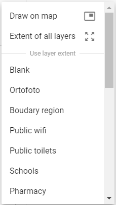
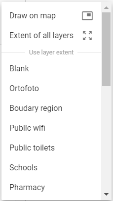

Releasing project¶
This chapter follows up on chapters 2. Traditional publishing or 3. Experimental publishing and represents last steps of project publishing. If the traditional way was followed, display user’s project page and click on the project name (blue colour). If user went through the experimental way, text below continues directly to chapter 4. Releasing project.
Section called SETTINGS is displayed. There are few
options in the settings window. It is possible to load map canvas using
map button (1). Use delete button (2) in case of removing whole project.
For logging out find the top right button (3).
Furthermore, it is possible to change the project title (4), set the
rate of autenthication (5) or edit map extent setting (6). There are few
possibilities how to edit map extent (7). First of all is to fill in the
desired coordinates into the frames. Secondly, map extent can be edited
manually by drawing a delimiting rectangle area in map. Last option is to
use extent of one imported layer or extent of all of them.
Setting map scales is possible in the left box (8). Executed changes are
reflected in map preview (9).
 

{kind=link}
Check the subsection Layers for advanced adjustment of layers. The base layer can be chosen in the left box (a blank base map is default). Within the right box it is possible to specify which layers will be published or hidden (or both which means that the layer will be published but turned off when the project is opened).

Last subsection is dedicated to topics. Creating or removing topic is enabled. Select a topic to see involved features which can be subsequently modified.

In the very last step, hit the update button to save all realized changes and finish the experimental publishing process.